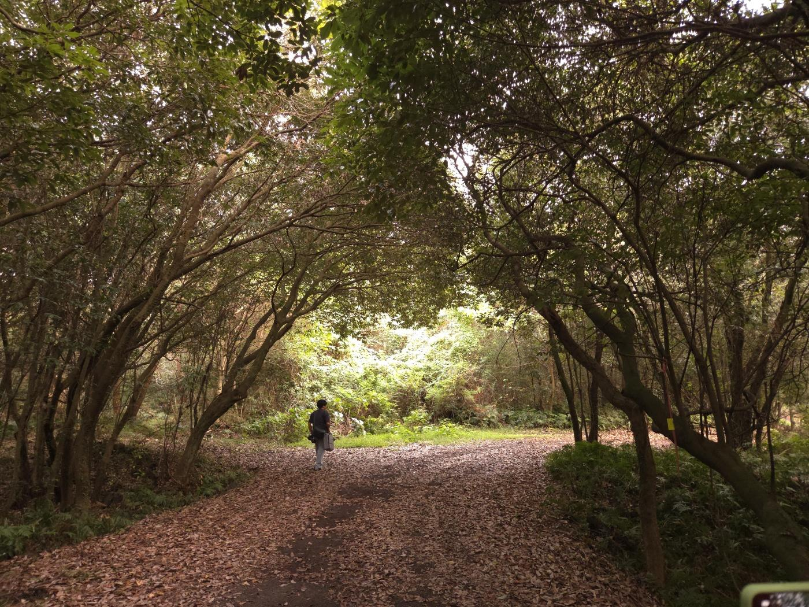
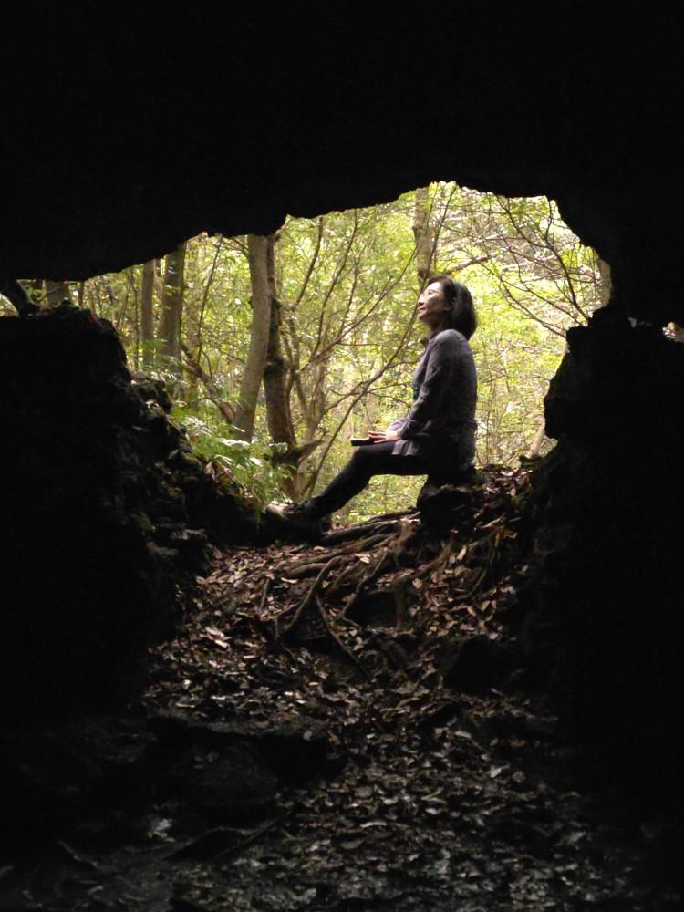
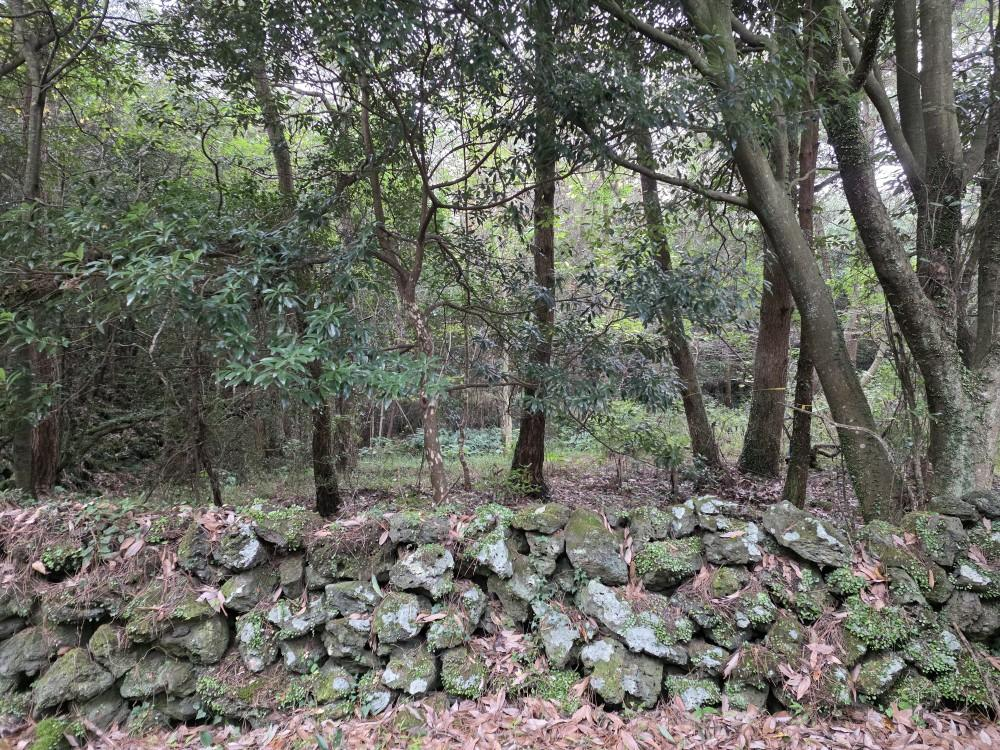
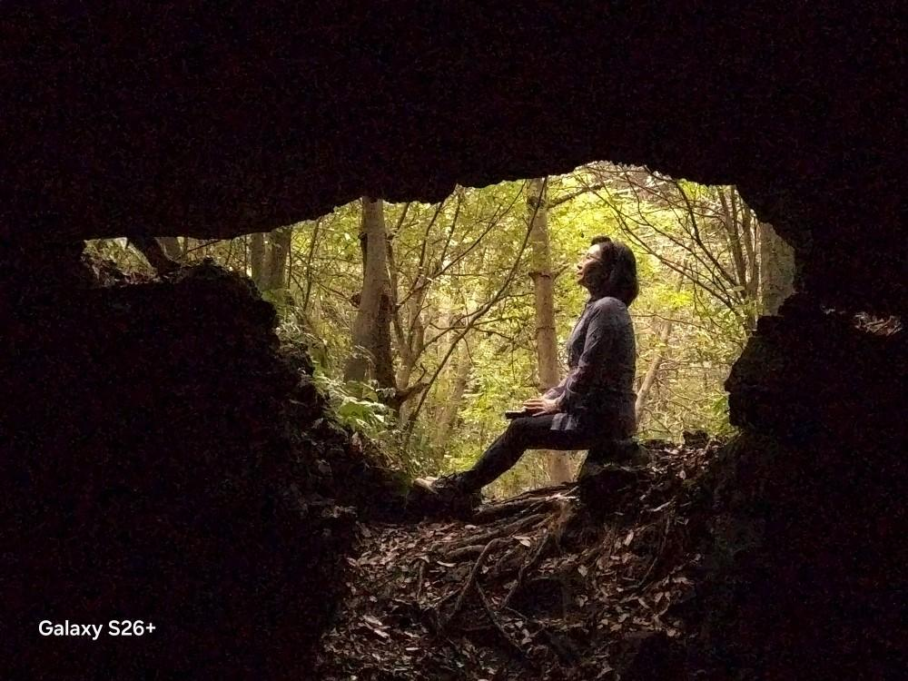
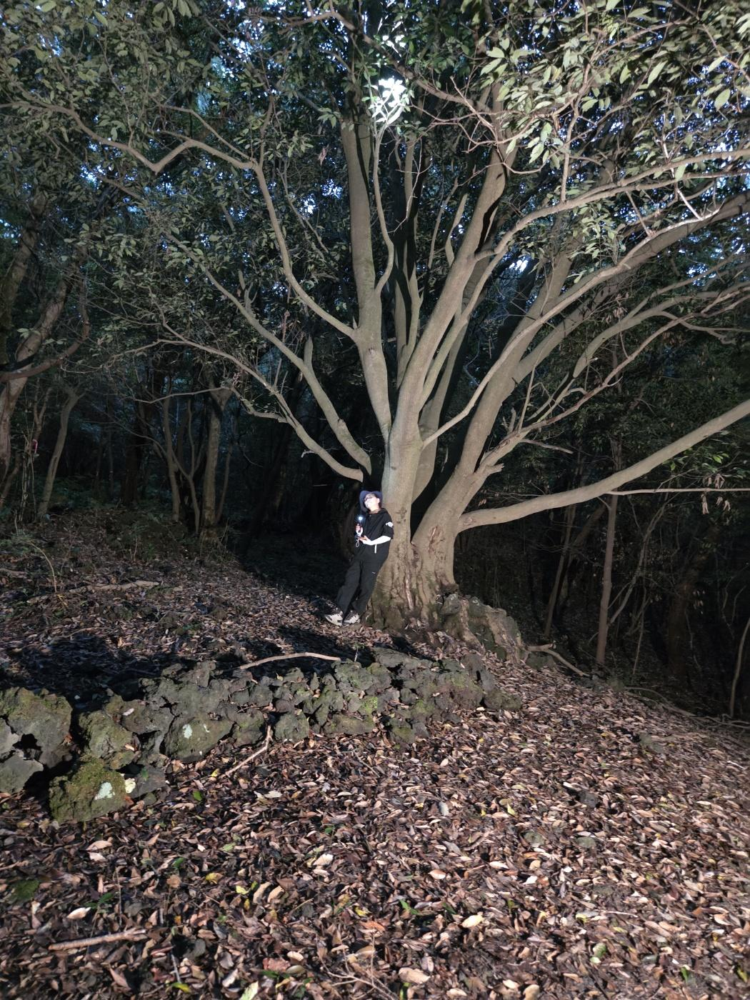
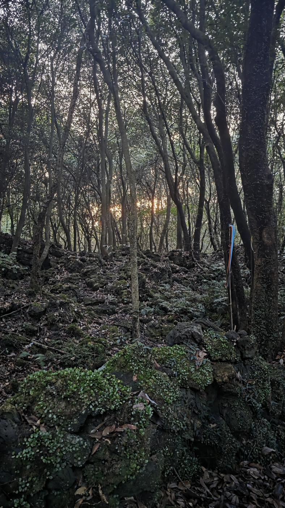
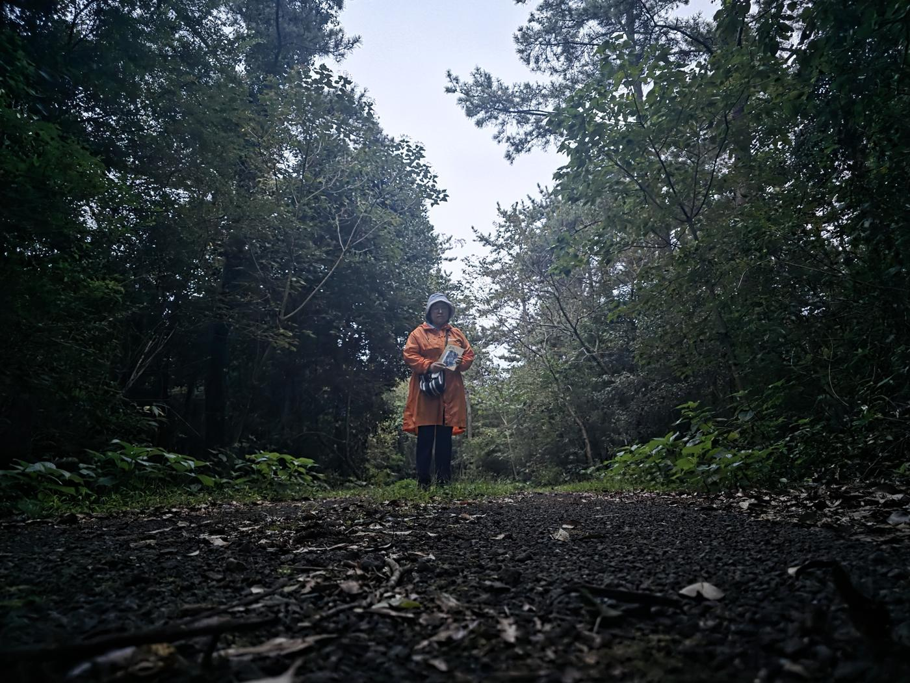

저지리 생태관광마을 · 빛이 숲을 떠나는 시간
스마트폰 하나로 곶자왈을 잘 담는 방법. 최경진 작가의 강의와 2026년 9월 28일 현장 실습에서 나온 요령을 숲에서 바로 펼쳐 볼 수 있게 정리했습니다.

오늘의 해
곶자왈은 해가 지기 전부터 숲 안이 빠르게 어두워지고, 길이 서로 비슷해 보여 방향을 잃기 쉽습니다. 숲 탐방은 해가 완전히 뜬 뒤에 시작하고, 해가 떠 있을 때 반드시 숲을 나오세요. 아래 '숲에서 나오기'는 일몰 1시간 전입니다.
저지곶자왈 (북위 33.33°, 동경 126.26°) 기준
흐리거나 비 오는 날은 숲이 더 일찍 어두워지니 더 일찍 나오세요. 계산은 약식 천문 공식이라 1~2분 차이가 날 수 있습니다.
사진이 가장 예쁘게 나오는 골든타임은 해 뜨고 지기 전후 30분입니다. 이 시간은 숲 입구 주차장, 마을 돌담길, 오름처럼 트인 곳에서 쓰세요.
곶자왈 안에서는 한낮이 오히려 좋습니다. 머리 위 나무 그늘이 강한 햇빛을 걸러 주기 때문에, 강의에서 말한 "한낮에는 그늘·숲에서"가 그대로 들어맞아요. 빛이 부족하게 느껴지면 화이트밸런스(16번)나 밝기 조절(12번)로 따뜻하고 밝게 만들 수 있습니다.
숲에 들어가기 전
곶자왈 촬영 포인트
실습 날 걸었던 숲길에서 만나는 다섯 가지 장면입니다. 사진은 모두 참가자들이 그날 스마트폰으로 찍은 것이에요.





강의 요약
강의 순서 그대로 네 장으로 묶었습니다. 위 촬영 포인트의 태그를 누르면 해당 카드로 이동해요.
촬영 전, 촬영 중, 통화 후에도. 작은 화면에선 몰라도 큰 화면에선 뿌옇게 보여요.
왼손 엄지·검지, 오른손 검지·새끼손가락으로 받치고 오른손 엄지로 셔터. 세로 사진은 손을 모아 삼각대처럼.
카메라·눈·대상을 일직선으로. 앉은 사람은 앉아서, 아이는 아이 눈높이로. 1.5~2.5m 거리가 왜곡이 적어요.
16:9는 위아래가 잘린 화면입니다. 4:3으로 찍고 필요하면 나중에 자르기.
눈대중으로 안 보이는 미세한 기울기를 선에 맞춰 잡아요. 가운데 수평계가 있는 폰은 선이 하나로 겹칠 때가 정확한 수평.
수평선(돌담, 숲 경계)을 가로선 하나에 맞추고, 더 보여주고 싶은 쪽을 2/3로.
주제를 가운데 대신 교차점 네 곳 중 하나에. 네 곳 모두 넣어 보고 가장 편안한 곳을 고르세요.
스마트폰 렌즈는 가운데가 작게, 가장자리가 크게 나와요. 얼굴을 가운데 칸(5번)에, 발끝을 아래 가운데 칸(8번)에 두면 키가 커 보입니다. 누워서 찍을 필요 없어요.
팔꿈치·손목·무릎·발목에 화면 끝이 걸리지 않게. 꼭 잘라야 하면 허벅지에서. 바닷가·숲 경계선이 목을 가로지르지 않게도.
사람·동물은 눈동자, 꽃은 가운데 꽃술을 손가락으로 살짝 눌러요. 폰은 가까운 것(코, 앞의 꽃)에 초점을 잡기 쉽습니다.
인물 모드나 일반 모드에서 앞의 잎·나무·동굴 너머 사람을 터치. 앞은 뿌옇게, 사람은 또렷하게 됩니다. 흐림 강도는 인물 모드의 효과 강도로 조절.
얼굴을 누르면 초점과 함께 밝기 막대가 나와요. 위로 올리면 밝게, 내리면 실루엣.
가까운 돌이나 풀(근경), 중간의 사람이나 길(중경), 먼 숲(원경)을 한 장에. 시선이 가까운 곳부터 깊어집니다.
가까운 인물 사진은 몇 장으로 끝내고, 뒤로 물러나며 찍으세요. "나도 저기 가고 싶다"는 사진이 오래 남아요.
해 뜨기·해 지기 전후 30분. 빛이 옆에서 들어와 머리카락이 빛나고 색이 따뜻해집니다. 곶자왈 안이 아니라 숲 입구·마을·오름처럼 트인 곳에서 쓰고, 숲 안에서는 한낮의 나무 그늘을 활용하세요.
흐린 날엔 프로(전문가) 모드 → WB 숫자를 올리면 따뜻한 골든타임 색이 납니다. 내리면 푸르고 차갑게.

현장 미션
잘 찍는 기술보다 곶자왈을 나만의 시선으로 담는 게 목표입니다. 다섯 개 중 몇 개나 모을 수 있을까요? 0 / 5
나무껍질, 돌 구멍, 덩굴에서 얼굴이나 동물 모양을 찾아 찍기.
나뭇잎 사이로 비스듬히 들어오는 햇빛이 닿은 한 부분만.
동굴이나 나뭇가지 사이를 프레임으로 두고 그 너머를 찍기.
일행을 숲길 끝에 세우고 최대한 물러나서 한 장.
이끼, 고사리 새순, 꽃술의 이슬처럼 발밑의 작은 세계를 터치 초점으로.
숲 예절